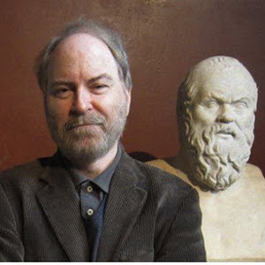

The concept of zero-intelligence (ZI) agents has been developed as part of the project of simulating market design in economics (Gode & Sunder 1993). It’s also been put to use by Andy Clark in his work on extended mind. I argue that this concept is useful for defining the notion of intelligence in a contrastive analysis between (a) non-human agents with purportedly minimal intelligence, (b) humans, and (c) AI, as well as for clarifying models of skilled performance. I’ll argue that even in so-called mindless performance or minimal/ZI agency, intelligence is never zero, but is rather distributed across various factors and highly dependent on embodied processes. To show this I'll appeal to the science of myrmecology and suggest that we can learn a lot from ants.
Shaun Gallagher is Professorial Fellow in SOLA, Faculty of Law, Humanities and the Arts at the University of Wollongong. His areas of research include phenomenology and the cognitive sciences, especially topics related to embodied cognition, self, agency and intersubjectivity, hermeneutics, and the philosophy of time. He is the Lillian and Morrie Moss Professor of Excellence at University of Memphis. His most recent invited positions as professor/researcher include Keble College, Oxford (2016) and University of Rome - Sapienza (2019 and 2022) Professor Gallagher held the Anneliese Maier Research Award [Anneliese Maier-Forschungspreis] (2012-18), and is one of first philosophers to receive this 5-year Humboldt Fellowship. Gallagher is a founding editor and co-editor-in-chief of the journal Phenomenology and the Cognitive Sciences.